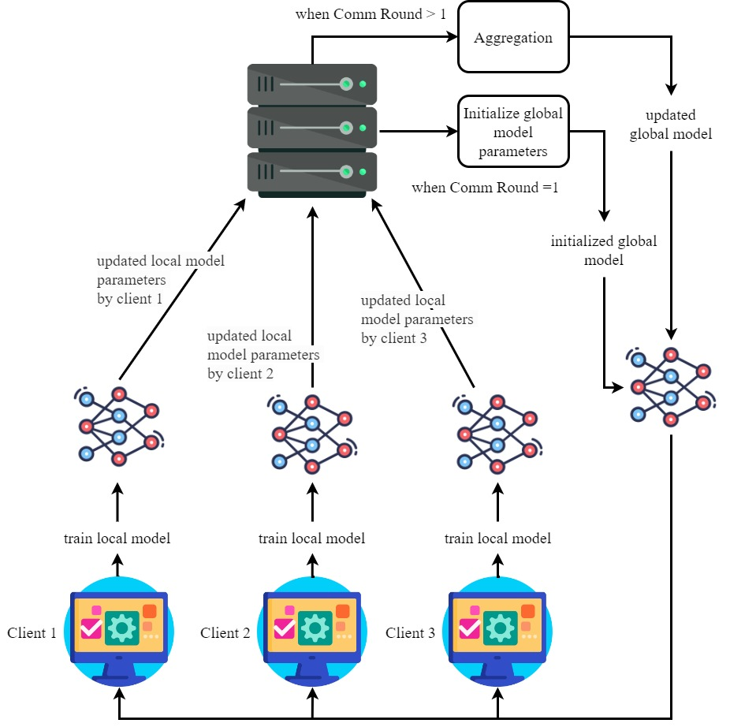

|
Nazia Shehnaz Joynab I'm a Software Engineer (DevOps) in SCM_DPI (Software Configuration Management_Development, Production & Infra) Team at Samsung R&D Institute Bangladesh. I graduated from the Dept of Computer Science and Engineering, MIST. At Samsung, I am working on Artifact Delivery System (ADS). My tech stack includes: Core Java, Django and AWS. Additionally, I've been involved in the development of Proof of Concepts centered around Artificial Intelligence. As an undergrad student at MIST, I participated in several programming contests and hackathons to develop my critical thinking, time management skills and problem-solving abilities. I conducted courses on programming language basics, object-oriented programming on Python as part of my extra-curricular activities. |

|
ResearchI'm interested in the convergence of security and privacy concerns in healthcare systems, along with Distributed Machine Learning. My current career goal is to pursue a PhD program in my field of interest. |
|  |
Nazia Shehnaz Joynaba, Muhammad Nazrul Islama,*, Ramiza Rumaiza Aliyaa, A.S.M. Rakibul Hasana, Nafiz Imtiaz Khana, Iqbal H. Sarkerb aDepartment of Computer Science and Engineering, Military Institute of Science and Technology, Dhaka-1216, Bangladesh bDepartment of Computer Science and Engineering, Chittagong University of Engineering and Technology, Chittagong, Bangladesh Manuscript published at Informatics in Medicine Unlocked, 2024 We studied the efficacy of federated learning in cervical cancer prediction on three different experimental settings (2~IID, 1~Non-IID). Our proposed CNN-based FL architecture showed a test accuracy of 94.36% and 78.4% on an IID (Independent and Identically Distributed) and a non-IID setting respectively. The results indicate that FL showed a significant performance over traditional ML algorithms. |
|
Design and source code from Jon Barron's website |